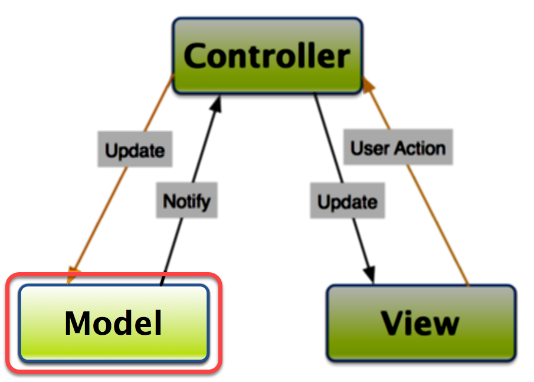
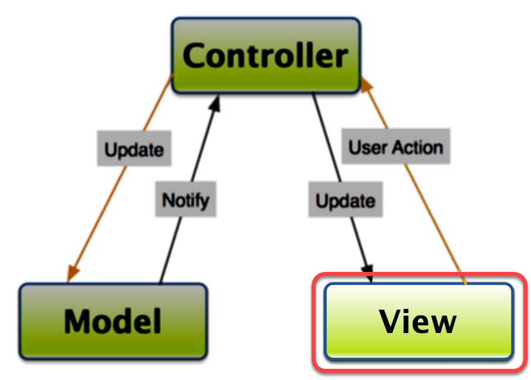
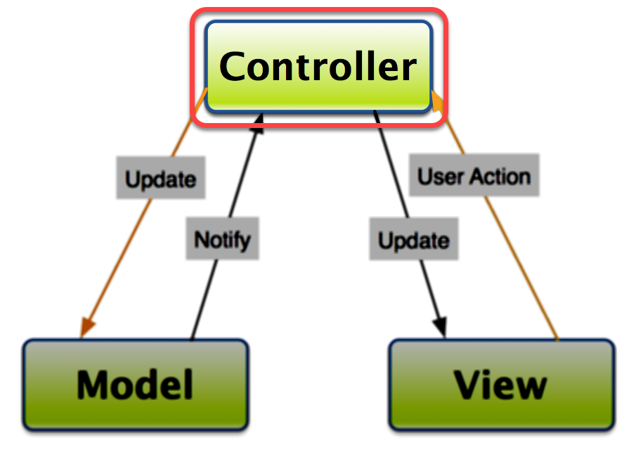
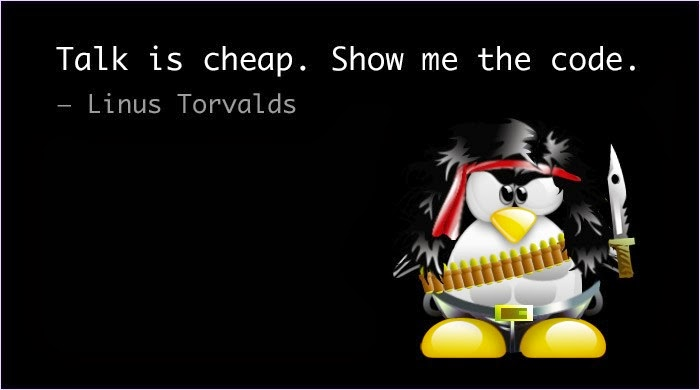

Taking Application Design To The Next Level with MVC
Carl Von Stetten / @cfvonner
About Me
- GIS Analyst for Central San (www.centralsan.org) in Northern California
- Working with ColdFusion since 2002 (CF 4.5)
- Lots of spatial and non-spatial data modeling, data management, intranet application development
- Tools I Use:
- Adobe ColdFusion, JavaScript (incl. jQuery & Bootstrap), Microsoft SQL Server, Python, Esri ArcGIS Desktop and Server, Geocortex, Safe FME (spatial ETLs), etc…
- Adobe Community Professional for ColdFusion
- Married 25 years, two grown children (still living with us)
- Unreformed DIY remodeler
- Passionate about craft beer! (should become obvious in a few minutes)
My Journey to MVC...
- Wrote/Maintained Procedural CFML apps 2002-2016
- Mostly .CFM files
- Custom tags
- Some components (.CFCs)
- Complete overhaul of intranet map portal starting spring 2016
- Rewrite CFML portion from scratch
- "We're going to do it right" = Go MVC
- Working prototype within 3 weeks
Agenda
- Prerequisites for this talk
- Brief review of procedural applications
- Definition
- Sample procedural code
- Drawbacks
- Introduction to Model-View-Controller concept
- How it works
- MVC frameworks for ColdFusion
- Sample MVC code
- Pros/cons of MVC
What Do I Need to Know?
- CFML language (syntax, functions/tags, etc.)
- Basic understanding of components
- How are they structured?
- How do I use them
- CreateObject()
- New
- CFInvoke
- CFObject
- ColdFusion request cycle
- Also helpful:
- CFScript syntax (similar to JavaScript syntax)
What Is a Procedural Application?
- CFM page for each URL in application
- Pages execute from top to bottom
- Typically 100's of lines of code per page
- Mix of business logic and display code
- Maybe some code reuse via <cfinclude> or custom tags
Disclaimer
The code you are about to see is simplified for clarity. It does not represent best practices, does not include security measures, and does not include user input validation/sanitation.--Me
What Does a Procedural App Look Like?
Downside of Procedural Code
- Increasingly hard to maintain, expecially as application evolves
- Hard to distribute work to teams
- Potentially lots of code duplication
- Violates the DRY principle
- Can't build an API from the business logic
- Intertwined with display code
Is There a Better Way?
- YES!
- MVC
- (You knew I was going to say that)
What Is MVC?
- Model-View-Controller design pattern
- Separates concerns (business logic vs. view code)
- Common pattern in OO languages
- Usually leverage MVC framework
- Rails (Ruby)
- Django (Python)
- ASP.Net MVC (
- Express/Sails (Node.js)
- Laravel/CakePHP (PHP)
- Spring (Java)

Model Layer
- Business logic
- Database interactions (CRUD)
- No external web service access
- Validation
- Helper services
- Should not know anything about the framework (including controllers and views)
- Responds to requests from the controller

View Layer
- User interface
- HTML/CSS/JavaScript
- Minimal server-side logic for display control
- NO business logic!!!
- No SQL code here!!!
- Layouts and views
- Should not know anything about the model
- Relies on controller to get data

Controller Layer
- Controls the flow of the application
- Examines each incoming request (URL/FORM variables or path)
- Calls relevant business logic (model objects/components)
- Passes results from model to view
- Minimal validation
- Short controller functions

MVC in ColdFusion
- MVC can be done without a framework
- Unless your hobby is reinventing the wheel, why would you?
- Frameworks offer lots of functionality you don't have to reinvent
- Dependency Injection (DI)/Inversion of Control (IoC)
- URL Routes
- Layout/View templating
- Data rendering (JSON, XML, text, custom)
- Modules/Subsystems
- Frameworks often improve code organization
MVC Frameworks for ColdFusion
- Framework-One (FW/1)
- ColdBox
- CFWheels
- Follows Ruby on Rails paradigm
- Some older MVC frameworks still in use
- FuseBox
- Model-Glue
- Mach II
- FarCry Core
What is Framework-One (FW/1)
- Created by Sean Corfield
- Version 4.1 recently released
- Small, lightweight
- MVC portion is one file, one.cfc (137KB)
- Two related files:
- ioc.cfc - Dependency Injection/Inversion of Control
- aop.cfc - Aspect-Oriented Programming
- Convention-Over-Configuration
What is "Convention Over Configuration"
- Structure application folders per recommendations and the framework figures out the rest
- Only need to specify configuration settings to:
- Override defaults
- Deviate from the recommended structure
- Deviate from the file naming conventions
What the heck is "RC"?
- RC variable = alias for request context, or request.context
- Sort of another scope (like application, session, request, etc.)
- Mechanism for passing data between framework, controller, and layouts/views
- FW/1 automatically populates RC with URL and FORM variables
- Write controller methods to insert anything else your layouts/views need
What Does a FW/1 MVC App Look Like?
MVC - The Good and The Bad
Pros
- Promotes DRY (code reuse)
- Assists team efforts
- Different parts of model, controllers, views can be worked on simultaneously
- Common pattern/terminology
- Enforces better code organization
Cons
- Have to learn some new concepts, even if already an excellen procedural programmer
- Might seem to end up with more files to manage
- But each file will be more focused and on-point
Migrating Legacy Apps
- Don't have to "eat the elephant" all at once:
- Choose logical sections/modules of an app to migrate
- Start new work in MVC pattern
- Move code in phases
- Move business logic into "fat controllers"
- Move display code into layouts or layouts and views
- MVC code can coexist with procedural code
- With combination of configuration settings and web server rewrite rules
Key Takeaways
- MVC isn't as hard as it seems
- It will make application code maintenance easier for the future
MVC Framework Resources
- Docmentation and Downloads
- Framework-One
- Docs: https://framework-one.github.io/
- Download: https://github.com/framework-one/fw1/
- CommandBox installation:
box install fw1
- ColdBox
- Docs/Download: https://www.coldbox.org
-
CommandBox installation:
box coldbox create app myApp
- Framework-One
- Discussion Groups
- Real-Time Assistance
- CFML Slack Team
- FW/1 Channel
- Box-Products Channel
- CFML Slack Team
Thank You!!!
- Contact Me:
- Email: carl.vonstetten1@gmail.com
- Twitter: @cfvonner
- GitHub: cfvonner
- CFML Team on Slack: @cfvonner
- Code/Slides: https://github.com/cfvonner/Intro-To-MVC-ColdFusion